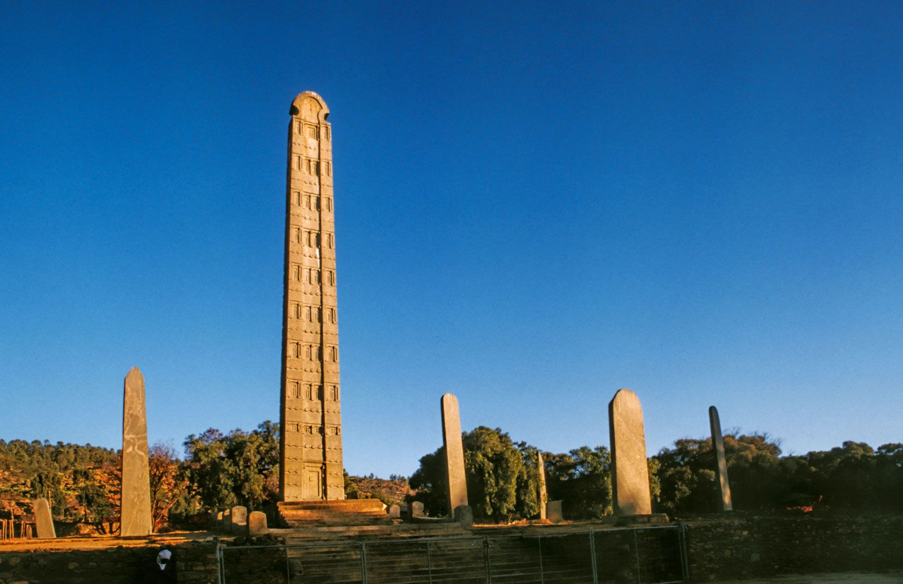

Ethiopia
The land of Origins
Visit Ethiopia - A Journey Through History
Introduction
Ethiopia , located in the Horn of
Africa, is a country with a rich and diverse
history that dates back thousands of years. as the cradle of
humanity, Ethiopia is where some of the earliest human ancestors
were discovered.
This land, with its unique culture, language, and traditions, has
played asignificant role in the history of Africa and the world.

Early History
The early history of Ethiopia is marked by the rise of the Kingdom
of Aksum, one of the great civilizations of the ancient world.
Flourishing between the 1st and 7th centuries AD, Aksum was a
major trading empire known for its impressive architecture,
including the famous obelisks.
It was during this period that Christianity was introduced to
Ethiopia, becoming a cornerstone of Ethiopian culture and
identity.

Modern Era
In the modern era, Ethiopia has undergone significant political,
social, and economic transformations. The country successfully
resisted colonization, maintaining its independence during the
European scramble for Africa, which culminated in the historic
Battle of Adwa in 1896.
The 20th century saw the reign of Emperor Haile Selassie, whose
leadership brought about modernization efforts and international
prominence.

Welcome to Ethiopia, Land of origins
Ethiopia invites you to discover why it is the origin of so much! As you explore Ethiopia, you will be put in touch with your own origins…for this is a Land of Origins
Major Historical Sites
Aksum
Aksum, an ancient city in northern Ethiopia, is famous for its towering obelisks and as the legendary home of the Ark of the Covenant. Once a major trading empire, Aksum is rich in history and early Christian heritage.
Lalibela
Lalibela, known as the "New Jerusalem," features 12th-century rock-hewn churches carved from solid rock. These unique and intricately designed structures are a vital pilgrimage site for Ethiopian Orthodox Christians.
Harar
Harar, a historic walled city in eastern Ethiopia, is renowned for its Islamic heritage, vibrant markets, and traditional Harari houses. It's also famous for the unique nightly ritual of feeding wild hyenas.
Simen Mountains
The Simien Mountains, a UNESCO World Heritage site, offer dramatic landscapes and rare wildlife like the Gelada baboon. This highland region is perfect for trekking and exploring ancient trade routes.